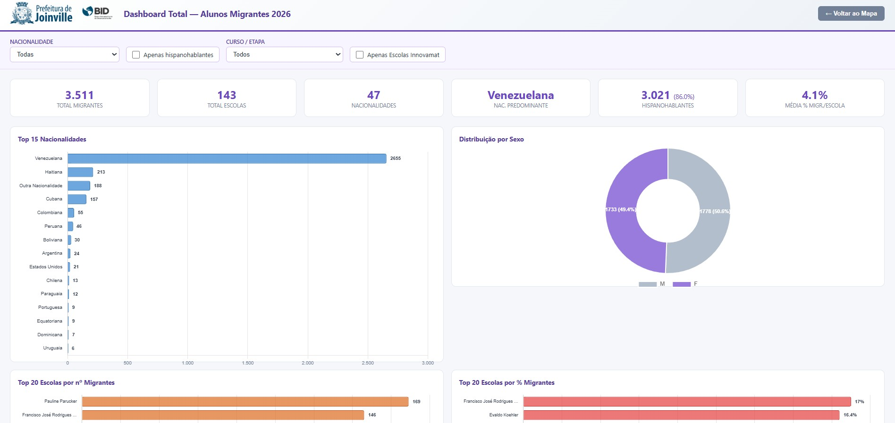

Contexto e Problema
O programa “Educação que Transforma” (empréstimo BID BR-L1665) articula o Plano de Expansão 2025–2035 da rede municipal — novas unidades, PPP, inovação e a doação para estudantes migrantes — com exigência de evidência, monitoramento e prestação de contas (inclusive TCE/SC). A Prefeitura precisava traduzir o acervo do contrato em instrumentos que o gabinete e o banco consigam usar.
O desenho financeiro e a negociação do empréstimo são institucionais (SED, SAP, UCP). O trabalho aqui é o apoio técnico à gestão do programa: dados territoriais, painéis e síntese para decisão e controle.
Instrumento georreferenciado do componente de migrantes


Solução Desenvolvida
- Monitoramento territorial: painel Leaflet/GAS dos estudantes migrantes da rede, com bases geocodificadas por escola
- Expansão: apoio analítico com coordenadas de unidades e recortes de bairro (projeção de matrículas/vagas), ligados ao Plano de Expansão e ao Painel de Obras
- Prestação de contas: síntese dos eixos do programa (migrantes, tecnologia, currículo/avaliação, expansão/PPP) para apresentação ao TCE/SC
- Acervo: diagnóstico e organização dos materiais do contrato para a Força-Tarefa intersetorial
Tecnologias Utilizadas
Resultados e Impacto
O município passou a contar com leitura geográfica do componente de migrantes e com materiais únicos para explicar o programa ao controle externo — o tipo de ponte entre dado territorial, contrato multilateral e gestão local que um observatório regional também exige.